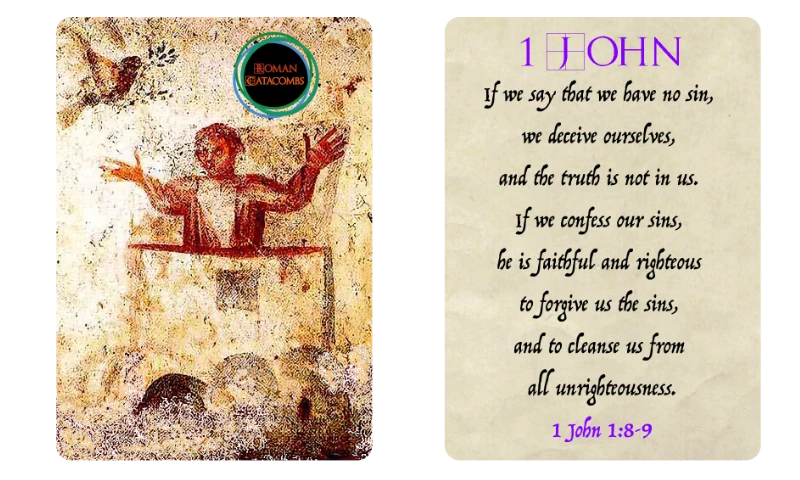

A Bible flip-and-write game
Roman Catacombs
You’re the librarian of a church hiding beneath Rome. Build a library of Scripture — and remember, you can’t move a book once it’s placed.
- 1–6 players
- Ages 12+
- 15–30 min
- 90 cards
$34.99
Ships from the SDG Biblical Wisdom shop. Try the free scorecard and solo play first.

A library with very little room
You are the librarian for a small church meeting in the catacombs outside of Rome. You’ve been asked to build a representative collection of manuscripts of the books of the Bible — but storage space is limited.
Your goal: a library of three books from each of seven categories. Keep the books in canon order, and you can’t move a book once you’ve placed it.
The game ends when one player completes their library. Points are earned for completing categories (with a bonus for finishing first), and lost for every spot left empty. Most points wins.
Seven categories, three books each
Each category scores two ways: the larger number for the first player to complete it, the smaller for anyone after.
Pentateuch
Genesis to Deuteronomy
9 first · 6 after
Historical Books
Joshua to Esther
7 first · 5 after
Wisdom Books
Job to Song of Solomon
10 first · 7 after
Prophets
Isaiah to Malachi
6 first · 4 after
Gospels & Acts
Matthew to Acts
9 first · 6 after
Paul’s Epistles
Romans to Philemon
7 first · 5 after
General Epistles & Revelation
Hebrews to Revelation
8 first · 5 after
90 cards of Scripture
Each card face shows the name of a book of the Bible and a quote from it, color-coded by category. The backs and the box carry an ancient painting of Noah in the ark, found in one of the catacombs near Rome where the early church met. Open the list below and tap any card to enlarge it.
Browse all 90 cards
A closer look at the cards
How to play
Everyone uses the same cards each turn. Flip three, pick one book for your library (or none), and write it in.
Flip three
Deal the deck into 3 piles of about 30. Each turn, flip the top card of each pile.
Choose one
Each player may add one of the three books to their library, writing it in a circle of its category — or pass.
Finish a category
Fill all three circles, announce it, and read the verse on the card that completed it. First to finish scores the bigger number.
Setup
Shuffle the deck and divide it into 3 piles of about 30 cards, face down where everyone can see them. Each player takes a scorecard.
On each turn
Flip the top card of each pile onto a discard pile beside it. Each player decides which of the three revealed books, if any, to add to their library, and writes its name (or an abbreviation) in one of the circles for that book’s category. Each player can add at most one book per turn.
Choose the circle carefully: a book can’t be moved once written, and the canon order of the books must be kept.
Late in the game you may have no usable spot for any of the three cards. Then you simply pass.
Completing a category
When you fill all three circles of a category, announce it and read the verse on the card for the book that completed it. If you’re the first player to complete that category, circle the larger of the two numbers under its name; if you’re second or later, circle the smaller.
If two players complete the same category on the same turn and nobody had completed it before, both circle the larger number.
Running out of cards
If every card in a pile is revealed before the game ends, shuffle that pile’s cards, place them back face down, and carry on.
Ending the game and scoring
The game ends when a player fills all 21 circles. Everyone adds up the points they circled for completed categories and subtracts 1 point for each circle left empty. The most points wins.
Playing solo
All the rules are the same, except that the game ends after 21 rounds. Any circles still empty then count against your score. The free online version can deal the cards for you.
Free scorecard and online play
Use it as a scorecard for your own copy of the game, or play online with no cards at all: solo, against computer opponents, or in the same room with everyone on their own phone.
Scorecard
Fill in your library by tapping a slot or a book; it only offers books that keep canon order, asks whether you finished a category first, and adds up your score. Works for any number of players, each on their own phone.
Solo, 21 rounds
The game flips three cards a round from a shuffled 90-card deck. Add one book to your library or pass; empty slots count against you.
Against the computer
Race 1 to 5 computer librarians at three skill levels. Everyone sees the same cards each round, and the first to finish a category scores the bigger number.
Same room, own phones
Play together like the card game, each on your own phone. One person starts a table and shares the code; everyone sees the same three cards each round. Any number of players, no sign-up.
Rules
The full rules are one tap away while you play.
Get Roman Catacombs
$34.99 · if inventory is available, orders from the SDG Biblical Wisdom shop typically ship within a couple of days.
Otherwise you can order from The Game Crafter print-on-demand store.